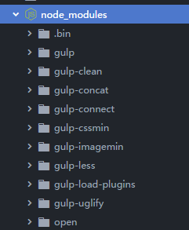

| angular调试工具：batarang | 链接：http://pan.baidu.com/s/1jGILtzg | ||
| bower依赖管理工具： | 链接：http://bower.io | ||
| node.js: | 链接：https://pan.baidu.com/s/1ZiX_hSdyYvQm6pnjJ1eNrA | ||
| 安装bower | bower:npm i -g bower | ||
| 常用bower命令 | bower init bower install bower uninstall | ||
| 配置文件:.bowerrc bower.json | (1)切换到网站目录:bower init－创建bower文件 (2)安装angular依赖:bower install --save angular (3)cmd null>.bowerrc {"directory","lib"} | ||
| 代码管理工具 Git git init | 链接：https://pan.baidu.com/s/1gg8f1wdmg97yVP3jqVaXjQ 密码：zo7u | ||
| 自动化管理工具：gulp | www.gulp.com.cn | ||
| 安装gulp | npm i -g gulp | ||
| 安装node.js模块 | cmd :npm init; 在当前的目录下安装gulp npm i--save-dev gulp | ||
| 所有的gulp模块 |  在当前的目录下安装gulp npm i--save-dev gulp | ||
| 自动化配置文件gulpfile.js | 链接：https://pan.baidu.com/s/1IKh2BQvzfcAZdTvPBU8LKw 密码：e0nx | ||